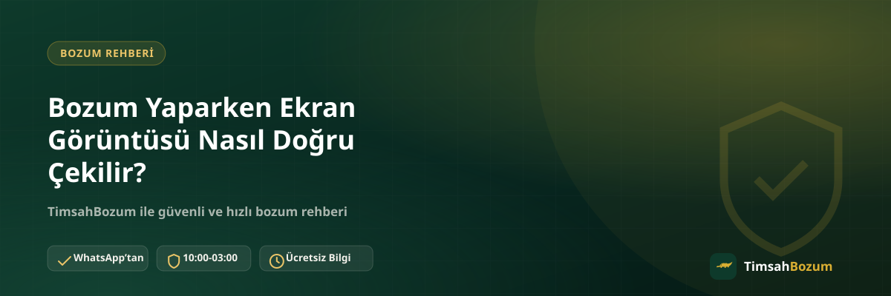

Bakiye tabanlı bir bozum işlemine başlarken çoğu kişi "hangi bilgiyi göndereceğim" sorusuna odaklanıyor, ama en az onun kadar önemli bir konu da o görüntünün teknik olarak nasıl alınacağı. Yanlış çekilmiş, bulanık ya da eksik bir ekran görüntüsü, doğru bilgiye sahip olsan bile süreci geciktirebilir. Bu yazıda ekran görüntüsünü adım adım nasıl doğru çekeceğini, hangi hizmetlerde buna gerek olmadığını ve en sık yapılan teknik hataları anlatıyoruz.
Ekran Görüntüsü Almadan Önce Ne Hazırlamalısın?
İyi bir ekran görüntüsü, çekmeden önceki birkaç saniyelik hazırlıkla başlar. Telefonun ekran parlaklığını artırmak, bildirim çubuğundaki gereksiz uyarıları kapatmak ve ilgili uygulamayı (operatör uygulaması, Paycell, Pokus gibi) tam olarak açık tutmak, tek seferde net bir sonuç almanı sağlar. Acele edip yarım açılmış bir ekranın görüntüsünü almak, sonradan aynı işlemi tekrarlamana neden olur.
Telefonunda Ekran Görüntüsü Nasıl Alınır?
Android telefonlarda genellikle güç ve ses kısma tuşlarına aynı anda kısa süreli basmak yeterlidir; bazı modellerde avuç içi kaydırma veya hızlı ayarlar menüsünden de alınabilir. iPhone modellerinde ise yan tuş ile ses açma tuşuna birlikte basmak (Face ID'li modellerde) ya da ana ekran tuşu ile yan tuşu birlikte kullanmak (eski modellerde) standart yöntemdir. Hangi yöntemi kullanırsan kullan, önemli olan ekranın tamamının, kesilmeden kaydedilmesidir.
Hangi Hizmetlerde Ekran Görüntüsü Gerekir, Hangilerinde Gerekmez?
Bu ayrımı bilmek gereksiz bir adımı atlamanı sağlar. Pokus, Paycell, Vodafone/Türk Telekom/Turkcell mobil ödeme gibi bakiye tabanlı hizmetlerde güncel bakiyeni gösteren bir ekran görüntüsü işlemi hızlandırır. Buna karşılık Razer Gold ve iTunes gibi kod tabanlı hizmetlerde paylaşman gereken şey bir bakiye ekranı değil, doğrudan kodun kendisidir; bu yüzden bu iki hizmette ekran görüntüsüne genellikle ihtiyaç duyulmaz.
Ekran Görüntüsü Çekerken En Sık Yapılan Teknik Hatalar Nelerdir?
En sık karşılaşılan hatalar arasında ekranın yarısının kesilmesi, parmak veya kılıfın ekranın bir kısmını kapatması ve düşük parlaklıkta çekilen görüntünün okunamaz çıkması var. Bir diğer sık hata da yanlışlıkla farklı bir uygulamanın ya da eski bir sekmenin ekran görüntüsünü almak; bu durumda görüntü tamamen alakasız bir bilgi gösterebilir. Göndermeden önce görüntüye hızlıca göz atmak bu tür hataları baştan fark etmeni sağlar.
Görüntüyü Kırpmadan Tam Paylaşmak Neden Önemli?
Görüntüyü paylaşmadan önce kırpma isteği doğal bir refleks olsa da, bakiye tutarının etrafındaki bağlam (hangi uygulama, hangi hesap, tarih gibi) bilgiyi doğrulamada yardımcı olur. Aşırı kırpılmış, sadece rakamı gösteren bir görüntü, hangi hizmete ait olduğu netleşmediği için ek soru sorulmasına yol açabilir. Tam ekran halinde, düzenlenmemiş bir görüntü paylaşmak bu riski ortadan kaldırır.
Ekran Görüntüsünü WhatsApp'a Nasıl Göndermelisin?
WhatsApp'ta görüntüyü gönderirken "sıkıştırılmış" gönderim seçeneği bazen kaliteyi düşürüp yazıları bulanıklaştırabilir; mümkünse orijinal kalitede gönderim seçeneğini kullanman metnin net kalmasını sağlar. Aynı mesajda birden fazla görüntü göndereceksen, hepsini tek seferde toplu şekilde paylaşmak, tek tek ve aralıklarla göndermekten daha hızlı sonuç verir.
Bildirimler ve Ekran Kilidi Görüntüyü Nasıl Etkiler?
Tam ekran görüntüsü alırken üst kısımda beliren bir mesaj bildirimi ya da uygulama uyarısı, bakiye tutarının bir kısmını kapatabilir veya görüntüde alakasız bir yazı bırakabilir. Görüntüyü almadan önce telefonu birkaç saniye rahatsız edilmeyecek şekilde tutmak ya da bildirimleri geçici olarak susturmak, tekrar çekim yapma ihtiyacını ortadan kaldırır. Ekran kilidi açıkken alınan bir görüntüde de saat ve tarih bandının bakiye ekranının üzerine binmediğinden emin olmak faydalı.
Birden Fazla Hesabın Görüntüsünü Karıştırmamak İçin Ne Yapmalısın?
Birden fazla hattın veya hesabın bakiyesini bozduracaksan, her görüntüyü aldıktan hemen sonra hangi hesaba ait olduğunu kontrol etmek karışıklığı önler. Aynı uygulamada art arda birkaç hesap arasında geçiş yaparak görüntü alıyorsan, yanlışlıkla aynı ekranın iki kez veya yanlış hesabın görüntüsünün gönderilmesi sık karşılaşılan bir durum. Görüntüleri göndermeden önce sırayla kontrol etmek, işlemin ilk seferde doğru ilerlemesini sağlar.
Ekran Görüntüsü Yerine Yazıyla Bilgi Paylaşmak Yeterli mi?
Bazı durumlarda bakiyeni yazıyla belirtmek yeterli olabilir, ama bu bilginin doğrulanması gerektiği için genellikle bir ekran görüntüsü tercih edilir. Yazıyla iletilen bir tutar, o anki gerçek bakiyeyi garanti etmediği için ek bir teyit adımına ihtiyaç duyabilir. Elinde net bir ekran görüntüsü varsa bunu paylaşmak, işlemi yazıyla anlatmaktan her zaman daha hızlı sonuçlanır.
Gizlilik İçin Ekran Görüntüsünde Neleri Karartabilirsin?
Bakiye tutarı ve hangi hizmete ait olduğu net göründüğü sürece, isim, adres veya telefon numarası gibi ekstra kişisel bilgileri kapatman işlemi hiçbir şekilde etkilemez. Bu tamamen senin tercihine bağlı bir adım; istersen bir düzenleme uygulamasıyla bu alanları karartabilir, istersen olduğu gibi bırakabilirsin. Önemli olan, karartma işleminin bakiye tutarını veya hizmet adını gizlememesidir, aksi halde görüntü tekrar istenebilir.
Ekran Görüntüsünü Gönderdikten Sonra Süreç Nasıl İlerler?
Görüntüyü ilettikten sonra bakiye ve hizmet bilgisi kontrol edilir, ardından güncel oran WhatsApp üzerinden sana teyit edilir. Oranı onayladıktan sonra ödeme, yine WhatsApp üzerinden görüşülen yöntemle yapılır. Bu adımların hiçbirinde senden ek bir belge, üyelik bilgisi ya da hesabına erişim istenmez; görüntü net ve güncel olduğu sürece süreç ek bir gecikme yaşamadan ilerler. Mesajın çalışma saatleri (10:00-03:00) dışında ulaşması durumunda da görüntün kaybolmaz, hat açıldığında değerlendirilir.
Doğru çekilmiş bir ekran görüntüsü hazırladıktan sonra WhatsApp hattımıza yazarak güncel oranı teyit edip işlemini başlatabilirsin.
İlgili Yazılar
- Mobil Ödeme Bakiyesi Bozdururken Hangi Ekran Görüntüsü İstenir?
- Bozum İşlemi Yaparken Nelere Dikkat Etmeli
- Bozum Yaparken Hangi Bilgileri Asla Paylaşmamalısın?